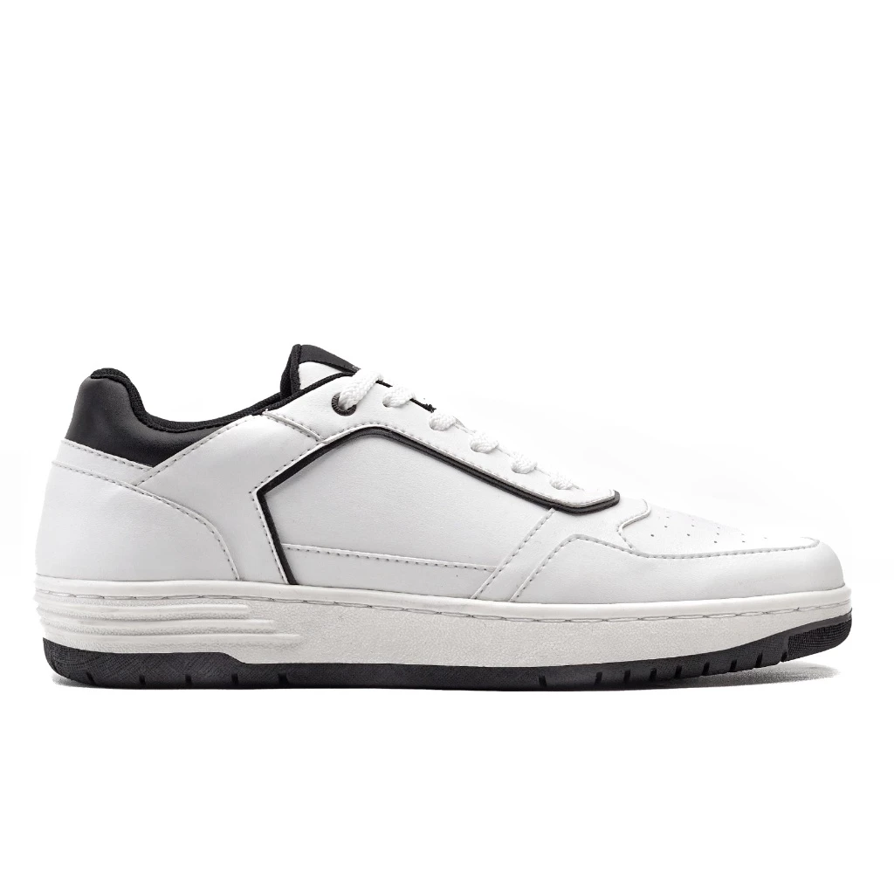
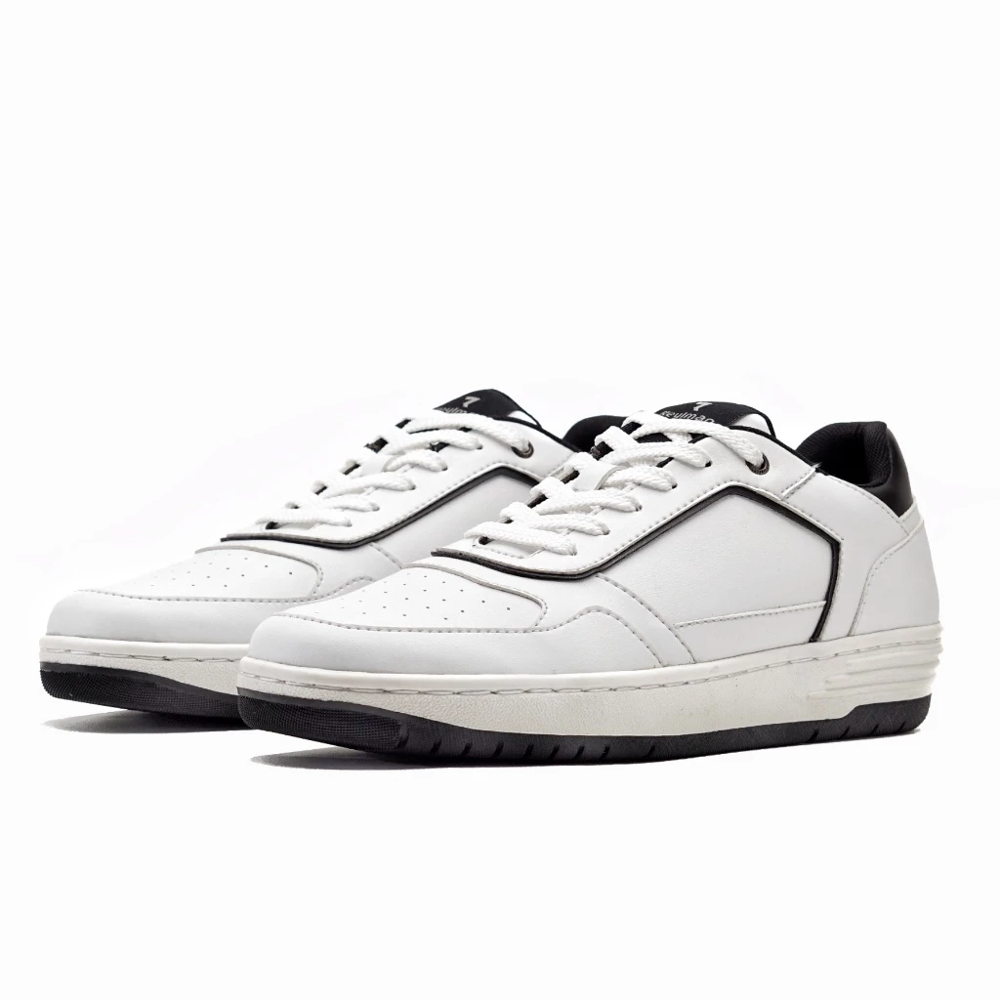
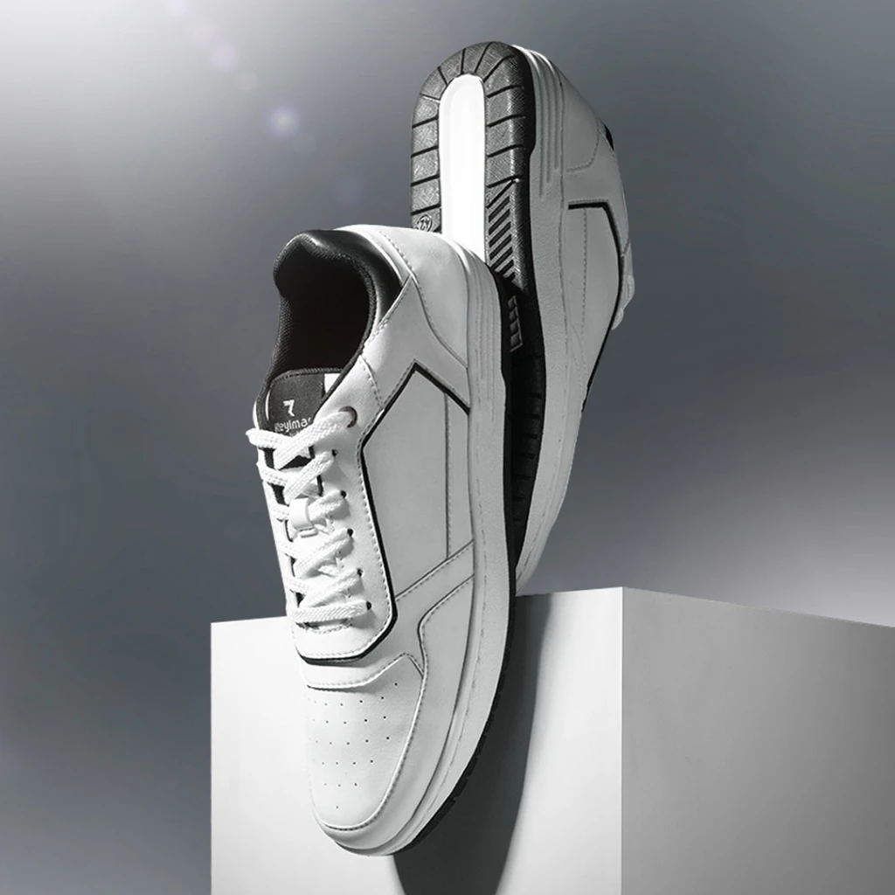
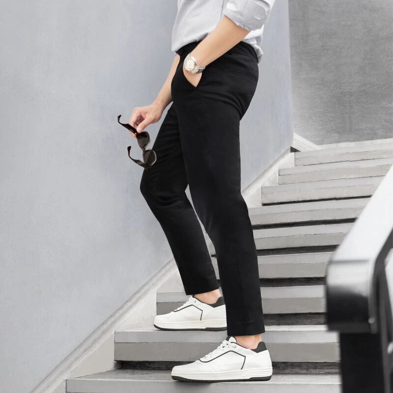
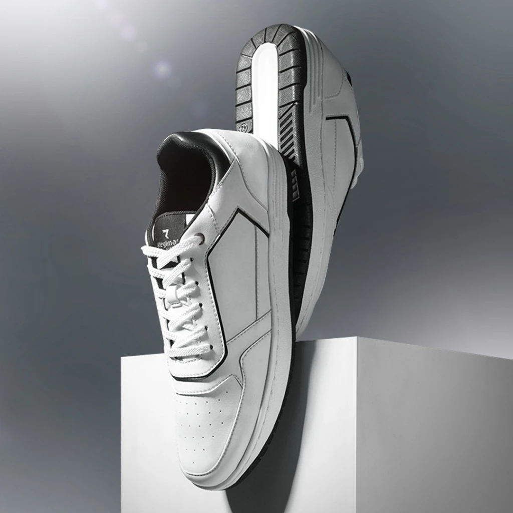
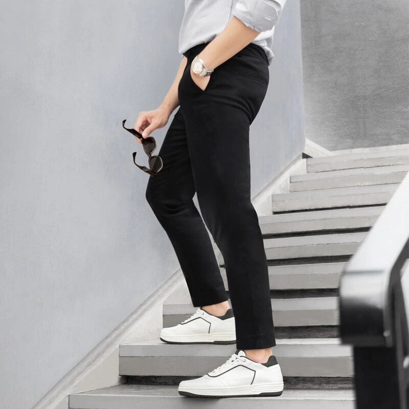
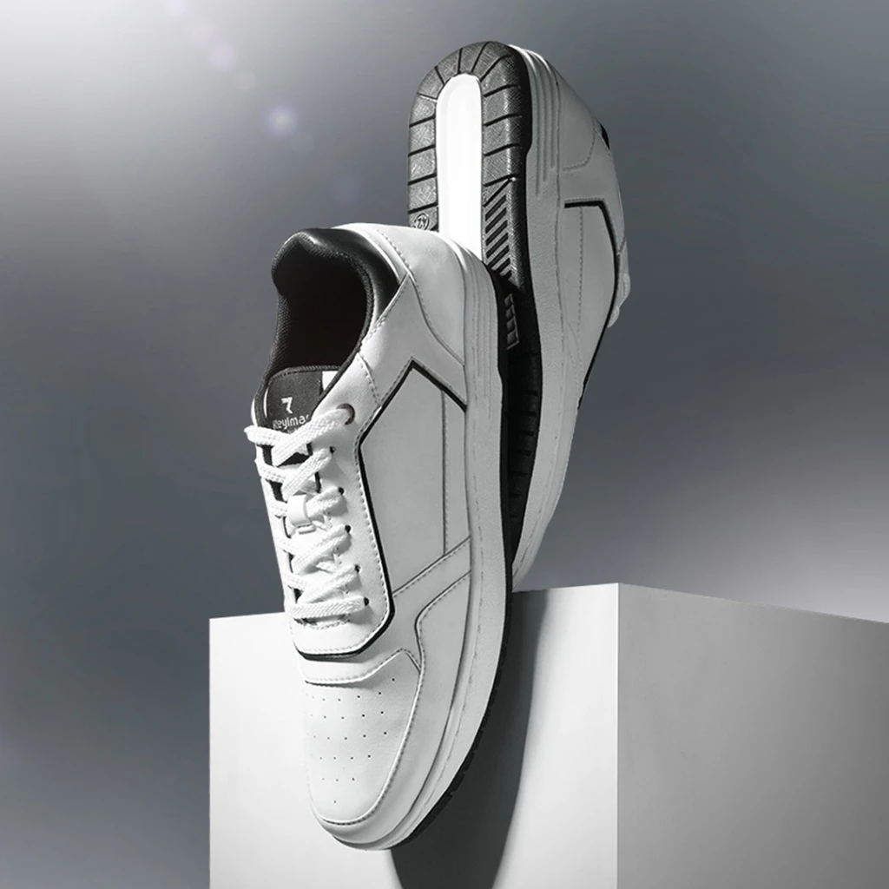
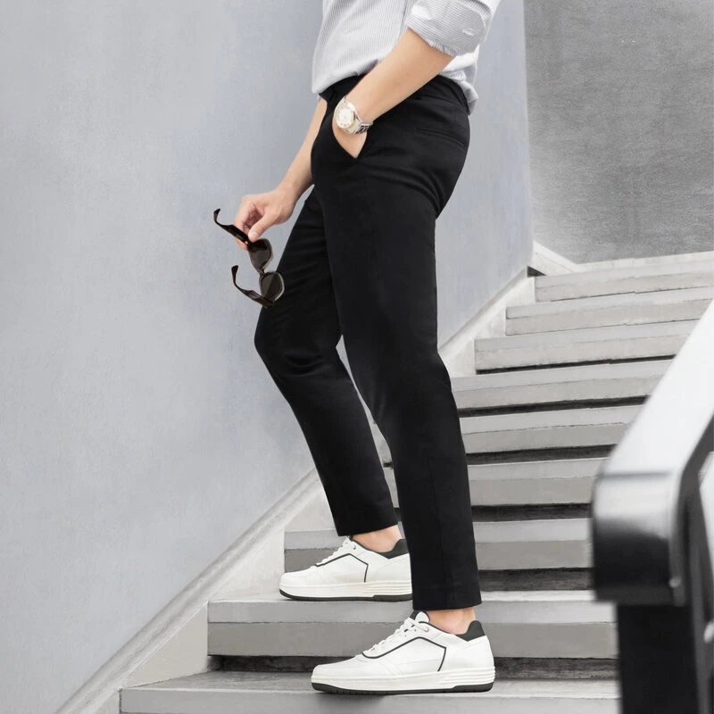
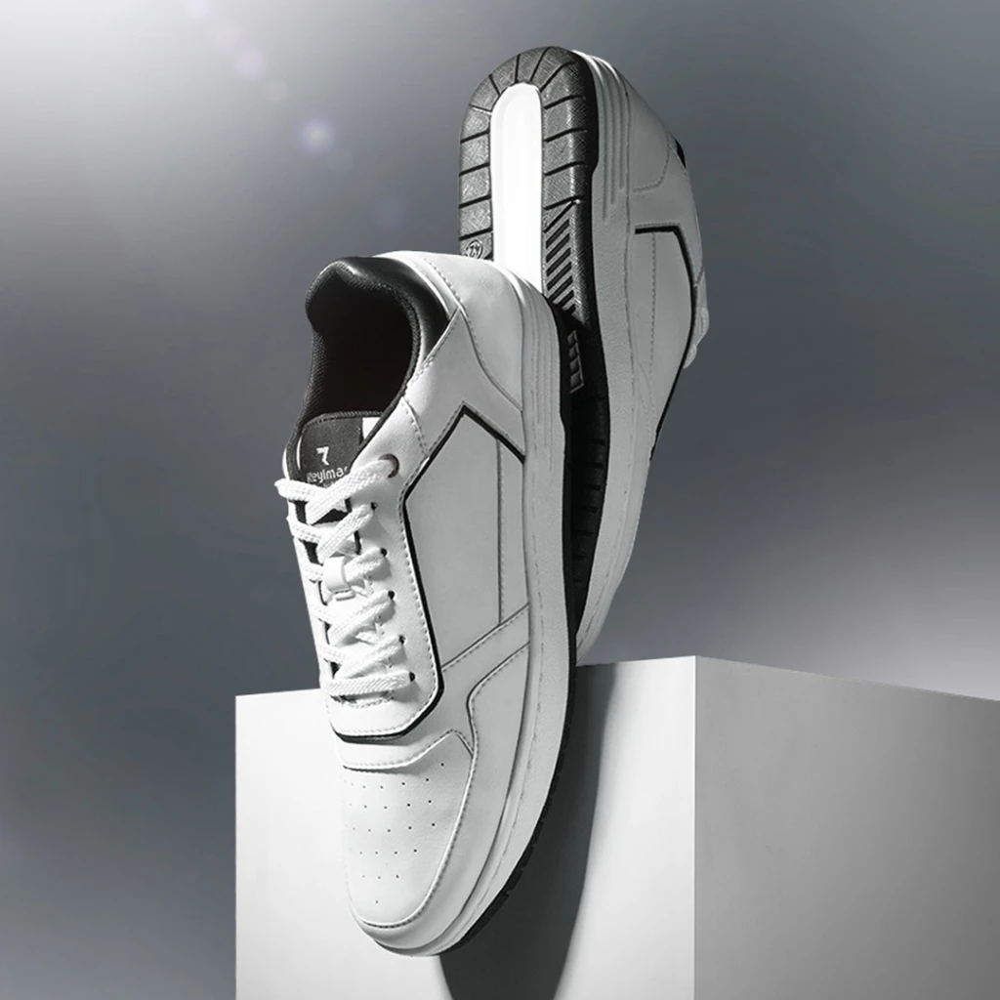
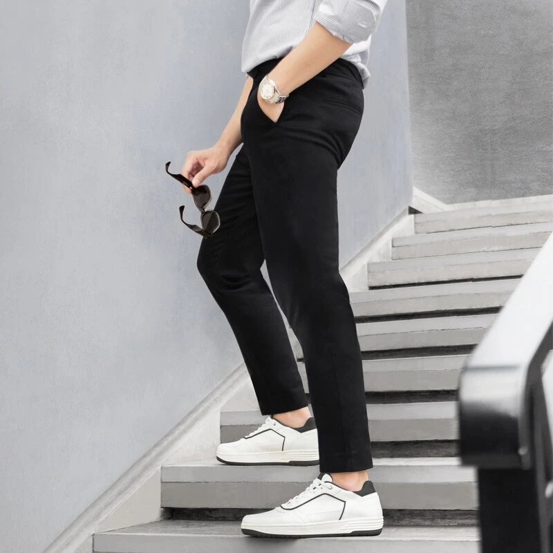

 





100% Original | Sepatu Casual Pria


Mulai Rp297.350 Rp435.000
Terjual: 42
⭐ 4,9 / 5.0
Garansi tiba: 3-4 Hari
Pengembalian: 15 Hari | 100% ORIGINAL
Keaslian produk dijamin oleh Shopee dan dapat dilihat melalui tulisan 'Jaminan Shopee' saat checkout
Scan untuk Checkout:
Sepatu ini merupakan casual sneakers dengan konsep sporty elegant yang membuat siapapun yang memakainya tampil lebih exclusive dan stylish. Desain yang dibuat premium namun tetap simple akan memberikan kesan berkelas dan trendy di waktu yang bersamaan.
Luxury sneakers ini didesain untuk memenuhi keinginan pria perkotaan yang ingin tampil fashionable dengan kesan mewah yang tidak berlebihan. Sneakers ini mudah dipadukan dengan outfit rapi ataupun casual. Cocok dipakai untuk banyak kegiatan seperti hangout, dinner di tempat fancy, dan acara semi formal.
Dengan cup insole pilihan, sneakers ini sangat empuk saat diinjak sehingga nyaman dan tidak lecet dipakai seharian. Outsole attractive memudahkan penggunanya melangkah lebih bebas dengan tampilan exclusive, trendy, dan up to date.
Warna : Putih List Hitam
Size : 39 - 44
Upper Material : Premium Synt Leather
Outsole : Premium TP Rubber
Insole : E.V.A foam (Empuk & Nyaman)
Construction : Cementing & Press Machine
(PENTING : Material yang digunakan pada sepatu ini berbeda dengan produk sejenis yang lebih murah dipasaran.
Sepatu ini menggunakan material terpilih yang lebih berkualitas dan premium, bentuk fisik produk lebih SOLID dan KOKOH. Tidak lepek).
Pengiriman yang cepat, Garansi produk, Note :
Pengiriman yang cepat, Garansi produk, Kemudahan proses penukaran, jika salah ukuran. (Dengan ketentuan produk masih kondisi bersih,normal dan belum dipakai beraktivitas), dan Diperbolehkan pengembalian uang jika produk tidak sesuai ekspektasi adalah fasilitas dan jaminan yang REYL MAN berikan untuk kepuasan pelayanan bagi customer.
Perawatan :
Perawatan sandal ini dengan cara di lap menggunakan kain basah, jika ada noda yang berat, lap tersebut bisa sedikit dibasahi terlebih dahulu dengan deterjen.
PERAWATAN
Perawatan sepatu ini dengan cara cukup di lap saja menggunakan kain basah. Jika menginginkan sepatu terlihat mengkilap, sepatu juga bisa untuk di semir.
Untuk membersihkan pada bagian outsole dengan cara menggunakan sikat kecil yang juga sudah dibasahi dengan deterjen.
Jangan merendam sepatu di dalam air sabun, material sepatu cukup dibersihkan menggunakan lap basah saja.
SIZE CHART
39 = Panjang 23,5 cm. Lebar 9 cm
40 = Panjang 24 cm. Lebar 9 cm
41 = Panjang 25 cm. Lebar 9,5 cm
42 = Panjang 25,5 cm. Lebar 9,5 cm
43 = Panjang 26,5 cm. Lebar 9,5 cm
44 = Panjang 27,5 cm. Lebar 10,5 cm
• Ukuran Centimeter yang dimaksud adalah ukuran Panjang Kaki dari tumit sampai ujung jari /panjang Insole Bagian dalam sepatu.
(Bukan panjang luar sepatu).
NOTE : Untuk menghindari kesalahan cara ukur, pengukuran dilakukan dengan cara posisi penggaris diletakkan di lantai yang datar dan posisi kaki HARUS BERDIRI. (Tidak sambil duduk).
JIKA STOCK SIZE YANG DIINGINKAN SEDANG KOSONG, SILAHKAN CHAT ADMIN UNTUK REQUEST P.O